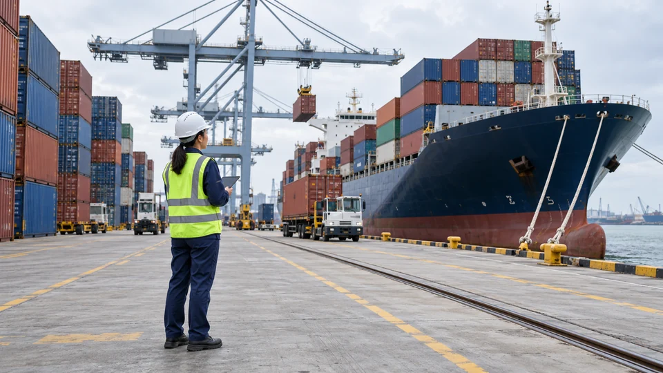

Vietnam Signs EFTA Trade Deal, Opening a New Route to Four European Markets
Vietnam and four EFTA countries signed a trade agreement on Sunday. Tariff benefits await entry into force, with product rules shaping who gains.

Vietnam signed a free trade agreement with Switzerland, Norway, Iceland and Liechtenstein in Hanoi on Sunday, October 18, giving exporters a new framework for access to four European economies. The agreement has been signed but is not yet in force, according to the European Free Trade Association.
The distinction is commercially significant. A signature establishes the agreed framework; it does not mean importers can immediately claim every tariff preference. Companies will need to follow the implementation process and the schedules applicable to their products.
A broader relationship than tariffs alone
The agreement covers goods and services, investment, procurement, intellectual property and sustainability. Its supporting documents include separate tariff schedules and rules for establishing where goods originate. EFTA is a separate grouping from the European Union, so this agreement should not be described as a new Vietnam–EU deal.
EFTA puts bilateral trade in 2025 at roughly €4.8 billion, excluding Swiss gold trade. Vietnam recorded a surplus of about €2.5 billion on that basis. The figures establish an existing commercial relationship rather than a forecast of trade created by the new agreement.
Machinery, pharmaceuticals and seafood feature among EFTA exports to Vietnam. Goods moving in the other direction include electrical equipment, clothing and footwear. That mix gives the pact relevance to both industrial suppliers and consumer-goods importers.
The commercial test is product by product
Reuters reported that approximately half of Norwegian exports to Vietnam would become duty-free when the agreement takes effect, rising to more than 98% within seven years. That timetable concerns Norwegian exports; it cannot be applied indiscriminately to every product traded by all four EFTA members.
For a manufacturer, a lower tariff can improve the economics of serving a market. The eventual gain still depends on the initial duty, the phase-in schedule, transport costs and whether the product qualifies under the agreement. An exporter assembling goods with imported components cannot establish eligibility simply by pointing to the location of final shipment.
TTN’s assessment is that the pact offers another route for diversifying trade, with the greatest practical value likely to emerge from specific product and service commitments. It does not establish that businesses have already shifted orders or that trade will rise by a particular amount.
A tariff saving is only one part of the delivered cost
Consider an explicitly hypothetical shipment with a customs value of $100,000 and a 5% duty. Eliminating that duty would remove $5,000 from the tariff bill before accounting for any other charges. It would not reduce transport, insurance or compliance expenses by the same percentage. The example illustrates the calculation; it is not a tariff rate or saving established for a product under the signed agreement.
The benefit can also be divided among suppliers, importers and customers. A seller may retain part through a higher margin, while competition may pass part through as a lower price. Exchange-rate changes or rising freight costs can offset a tariff reduction. Consequently, the value of trade covered by an agreement cannot be presented as the amount of profit it creates.
Rules of origin make documentation part of the commercial decision. A business evaluating a preference needs to identify the applicable product classification and the relevant origin conditions, then compare the benefit with the cost of meeting and documenting those conditions. Shipment from a participating country does not, on its own, answer that assessment.
Services and procurement commitments require a different reading from tariff schedules for goods. Their practical value depends on the specific market-access provisions and any reservations. Companies therefore need the final applicable text and implementation notices before treating an announced opening as an immediately available contract opportunity.
Implementation is the next milestone
Negotiations were completed in July after a process that began in 2012. Sunday’s signing is a distinct step forward, rather than a new announcement that talks have concluded.
The next developments to watch are entry into force, the treatment of individual tariff lines and how businesses use the rules in practice. Those details will determine the benefit to margins and market access more reliably than the signing ceremony alone.